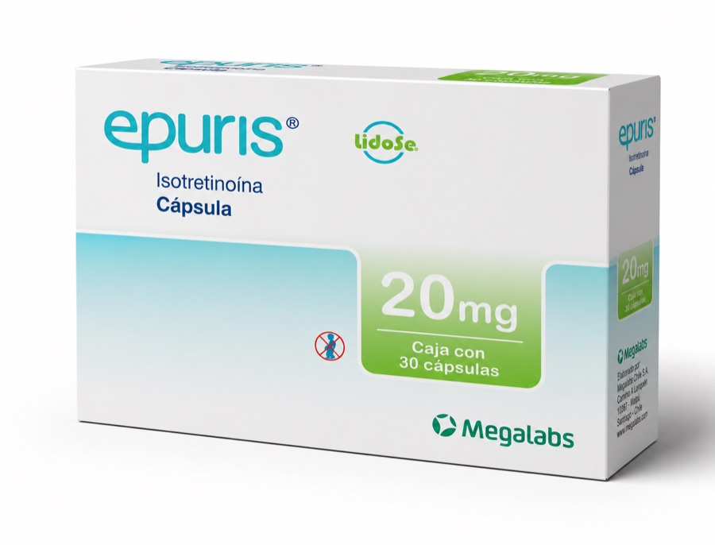

¿Qué es Epuris?
Epuris es isotretinoína oral en cápsulas y forma parte de los retinoides sistémicos utilizados en dermatología.
Dermatología
10 mg · 20 mg
Isotretinoína en cápsulas para solicitudes profesionales.
Epuris en 10 mg y 20 mg para solicitudes comerciales de profesionales y establecimientos de salud. La existencia se confirma al cotizar.

Epuris es isotretinoína oral en cápsulas y forma parte de los retinoides sistémicos utilizados en dermatología.
Su documentación oficial describe el uso de isotretinoína en acné grave. No se publican pautas de tratamiento: la selección de paciente y el seguimiento son responsabilidad médica.
La isotretinoína reduce la actividad de las glándulas sebáceas y modifica procesos implicados en el acné. Su utilización exige control profesional por su perfil de seguridad.
Fuente principal: Health Canada · Epuris
Información comercial
Confirmamos existencia al momento de tu cotización.
MG Dermalab
Indica 10 mg o 20 mg al escribirnos; así podremos revisar existencias para la presentación correcta. Atendemos solicitudes de profesionales de la salud, clínicas y farmacias cuando corresponde.
Información del producto
Revisamos lote, caducidad y empaque antes del envío y trabajamos con laboratorios reconocidos. Conoce nuestro proceso de revisión.
Coordinamos cobertura, costo y tiempo antes de procesar el pedido. Consulta cómo coordinamos los envíos.
Antes de cotizar
MG Dermalab consulta ambas presentaciones, siempre sujetas a existencia vigente.
Indica 10 mg o 20 mg, cantidad y ciudad por WhatsApp o mediante el formulario.
Sí. Atendemos médicos, clínicas, farmacias y pacientes particulares, con los requisitos aplicables a cada producto.
Sí. La cobertura, el costo y el plazo estimado se confirman antes de procesar el pedido.
Atención directa
Comparte la presentación, cantidad y ciudad. Nuestro equipo revisará tu solicitud y confirmará las opciones disponibles.